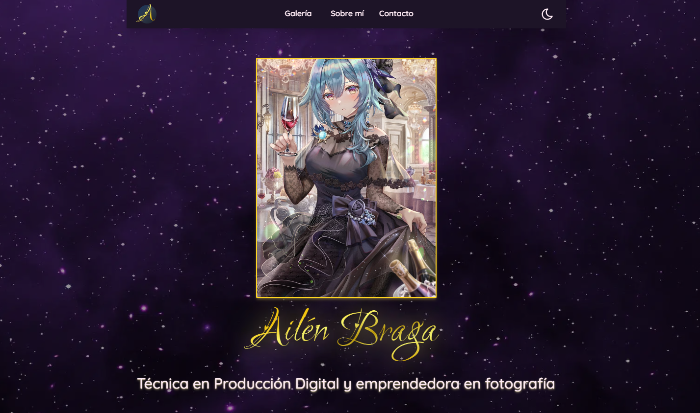
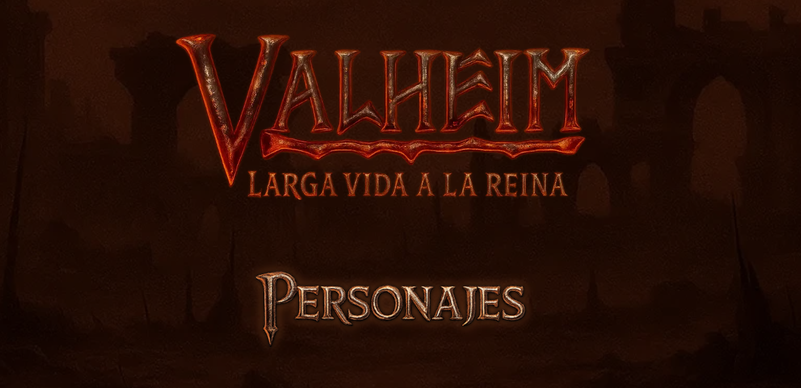

Hola, soy Matt
Desarrollador frontend y diseñador UX/UI de
Buenos Aires, Argentina 🇦🇷.
Creo sitios web a medida, centrados en detalle, estética
y experiencias únicas.
 Linkedin
LinkedinProyectos
 Código
Código HTML5
HTML5
Ailen Braga - Portfolio (en progreso)
Ailen Braga - Portfolio (en progreso)
-
 Astro
Astro
-
 Tailwind CSS
Tailwind CSS
-
 TypeScript
TypeScript
Portfolio personal de Ailen Braga, donde se exhiben sus proyectos de diseño gráfico, ilustración y arte digital, con una navegación intuitiva y un diseño visualmente atractivo que resalta su creatividad y habilidades artísticas.

Valheim: Larga vida a La Reina - personajes | tésis (en progreso)
Valheim: Larga vida a La Reina - personajes | tésis (en progreso)
-
Astro
-
 CSS
CSS
-
 JavaScript
JavaScript
Página de personajes de la webserie Valheim: Larga vida a La Reina, desarrollada como parte de la tésis de grado en Artes Digitales en la Universidad Nacional de Quilmes (UNQ), donde se presentan los personajes principales con sus respectivas biografías, características y roles dentro de la narrativa.